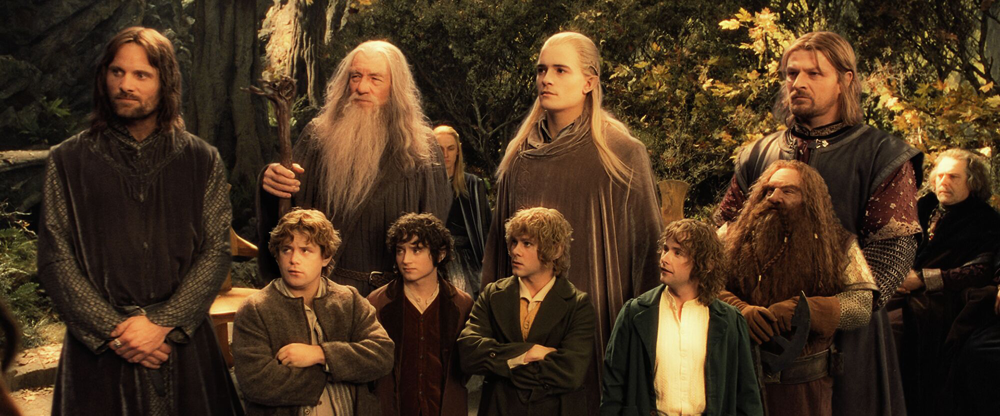
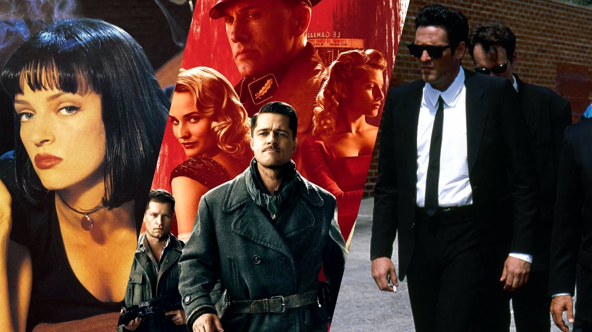
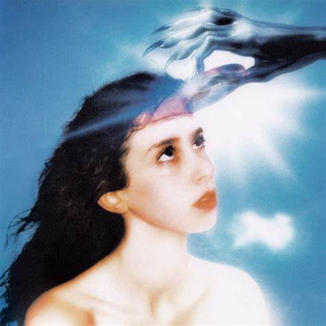
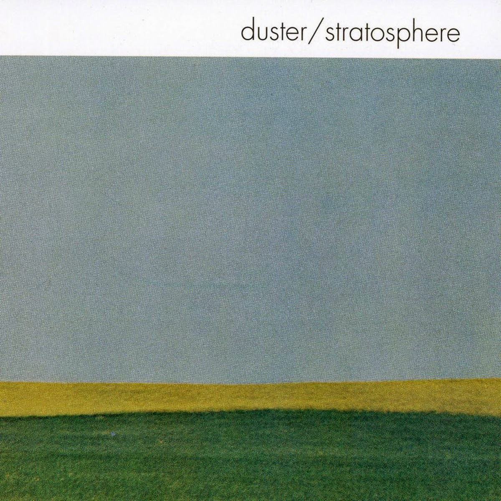
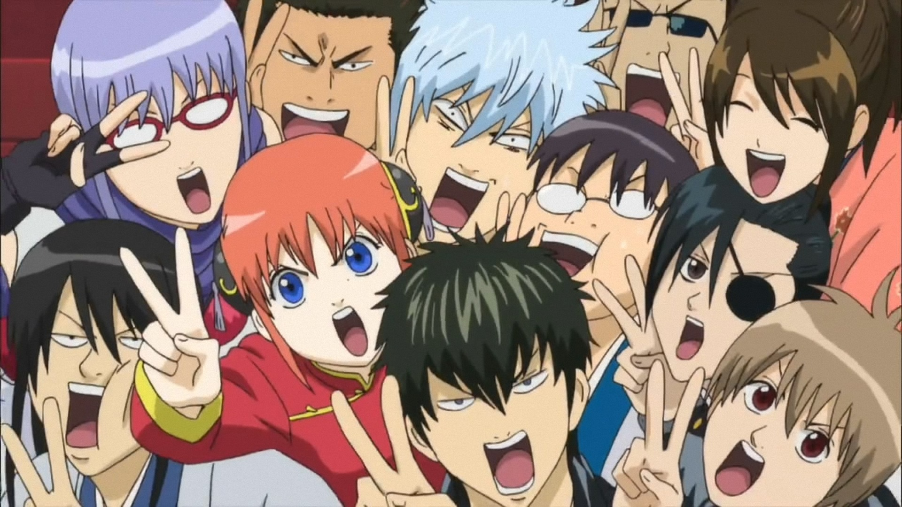
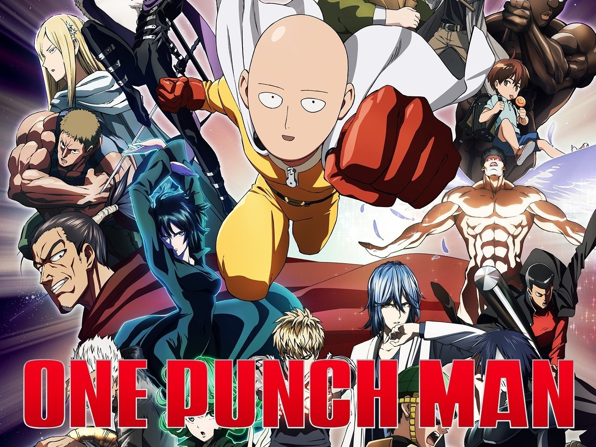

Things I like
What follows is just a list of some of my favorite titles from different types of media. I highly recommend all of these things if you have not watched/listened to them :)
Movies
12 Angry Men (1957)

Lord of the Rings trilogy

Spiderman: Into/Across the Spiderverse

Most Tarantino movies

Some of my favorites include Pulp Fiction, Reservoir Dogs, Kill Bill (1 and 2), and Inglorious Basterds
Music
Some of my favorite albums right now. This list will be outdated by next week.
Magdalena Bay: Imaginal Disk

Gojira: From Mars to Sirius

Denzel Curry: Melt My Eyez See Your Future

Duster: Statosphere

TV Shows
Avatar: The Last Airbender

Arcane

Breaking Bad

The Twilight Zone (1959)

Video Games
Elden Ring

The Last of Us

Sekiro: Shadows Die Twice

Detroit: Become Human

Anime
Frieren: Beyond Journey's End

Gintama

Vinland Saga

One Punch Man
